Si vous gérez les comptes d’une association, vous avez déjà constaté que les opérations enregistrées sur votre compte bancaire ne reflètent pas complètement la totalité de vos mouvements financiers. En effet, en plus des dépenses de fonctionnement réglées directement sur ce compte, la majorité de vos opérations consiste souvent en remises de chèques ou d’espèces, et en remboursements de frais engagés par les adhérents.
Pour avoir une comptabilité claire et précise, il importe d’une part de pouvoir enregistrer les opérations avec le bon tiers, d’autre part de pouvoir vérifier que les remboursements sont bien faits. Pour cela, en plus des Comptes bancaires, vous pouvez gérer des Comptes d’attente, pour des achats à rembourser à vos adhérents ou pour des remises de chèques ou d’espèces, des Comptes d’avances, pour les avances que vous recevez et celles que vous consentez, et des Comptes de caisse pour les opérations en espèces. Tous ces types de comptes sont présentés en détail dans la section 7.7, Types de comptes de Grisbi.
Grisbi vous permet aussi de créer des «tiers virtuels », qui simplifient énormément la saisie de nombreuses opérations similaires telles que les versements de cotisation (voir l’option Considérer les tiers de ce rapport comme un tiers virtuel dans la section 21.4.1, Généralités).
Selon la taille de l’association, son statut fiscal ou divers aspects, sa comptabilité peut être soumise à certaines obligations légales. Vous aurez avantage à consulter des guides de comptabilité d’association, qui donnent des exemples complets de gestion d’association, par exemple le Guide pratique & complet des associations, Pierre Ratelade, Top éditions Paris, 1999, 220 pages, ISBN : 2-8773-1168-6, ainsi que des sites Internet relatifs au cadre des associations et du Plan Comptable : par exemple :
Vous pouvez donc gérer votre association de deux manières différentes :
Cette section vous propose d’aborder une comptabilité simple à travers deux exemples. Les dépenses de fonctionnement étant des opérations très simples, ces exemples s’attachent surtout à expliciter les remises de chèques et les remboursements de dépenses faites par vos adhérents. Cela pourra sans doute vous paraître compliqué, mais ils montrent la bonne façon d’avoir une comptabilité d’association rigoureuse.
Nous considérons pour ces exemples que les exercices et imputations budgétaires ne sont pas renseignés.
Imaginons que vous soyez le trésorier de l’A.P.P.P.P., l’Amicale des Pauvres Poivrots Privés de Pinard…
Votre adhérent Hector Boyau achète un tire-bouchon atomique pour le compte de l’association. Cette dépense est réellement à imputer dans la comptabilité de l’association. Il importe donc de l’enregistrer avec le tiers et la catégorie réels. Saisissez les opérations suivantes :
Le tiers Hector Boyau n’a fait que servir d’intermédiaire et aucune opération ne doit lui être affectée dans cette transaction. Le compte d’avances revient à zéro, donc l’association n’a plus de dette. Le compte bancaire a bien enregistré la dépense des 20 euros.
Faites ensuite un rapprochement dans le compte d’avances, dont le solde sera égal au solde précédent du compte (le total des sorties étant égal à celui des entrées, le solde reste identique).
Vous achetez pour vos adhérents du pinard en bouteilles et en cubitainers, que vous leur revendez à prix coûtant. Ces achats ne concernent pas l’association mais constituent plutôt un service rendu aux membres. Vous allez les enregistrer avec le tiers réel mais surtout pas avec la catégorie.
Vous pouvez bien entendu utiliser le compte d’avances ordinaire pour enregistrer ces achats et ventes. Mais les opérations vont se mélanger avec les autres avances et vous aurez de la peine à distinguer où en sont vos stocks. Surtout si vous êtes un membre très actif de l’association ! Créez donc deux comptes d’avances spécialisés, un compte Pinard en bouteilles et un autre Pinard en cubi.
Soixante bouteilles ont été achetées 180 euros par votre adhérent Hector Boyau à la Coopérative du Père Jutard ; saisissez les opérations comme suit :
L’achat est passé avec le tiers réel mais avec la catégorie Virement. Le compte d’avances est débiteur, donc l’association doit de l’argent à quelqu’un. Le compte Pinard en bouteilles est créditeur de 60 bouteilles, soit 180 euros.
Le tiers Hector Boyau n’a fait que servir d’intermédiaire et aucune opération ne doit lui être affectée dans cette transaction. Le compte d’avances revient à zéro, donc l’association n’a plus de dette. Le compte bancaire a bien enregistré la dépense des 180 euros.
L’achat est passé avec le tiers réel mais avec la catégorie Virement. Le compte Chèques à encaisser est créditeur, et le chèque fera partie de la prochaine remise de chèques. Le compte Pinard en bouteilles est débité de 15 euros, il ne reste plus que 165 euros soit 55 bouteilles.
Lorsque toutes les bouteilles seront vendues, vous n’aurez plus qu’à rapprocher les opérations de cette vente pour les faire disparaître du solde.
Vous n’aurez plus qu’à rapprocher les opérations de cette remise pour les faire disparaître du solde.
Si Yves Remord vous avait payé en espèces la démarche aurait été la même mais avec le compte d’espèces et une remise en espèces.
Si Hector Boyau avait acheté 60 bouteilles et 10 cubis pour 280 euros, l’opération d’achat aurait été passée en opération ventilée comme suit :
Le reste des opérations est identique au premier cas de figure (voir la section 19.2.1, Premier cas de figure).
Maintenant, nous vous proposons un petit exercice, pour vous permettre de voir si vous avez compris le principe : Hector Boyau a pris 10 bouteilles pour lui et demande donc qu’on ne lui rembourse que 150 euros. Comment enregistrez-vous cela ? Vous trouverez la réponse en fin de chapitre (voir le paragraphe 19.4, Exercice 1).
Cette section vous donne les premiers éléments pour démarrer la comptabilité d’une association ou d’une petite entreprise conformément aux règles légales. Si cette organisation y est soumise, le trésorier devra obligatoirement utiliser les dispositions légales.
Pour illustrer ce chapitre, un embryon de comptabilité d’association a été créé : le fichier Association_1.0.gsb est disponible soit sur le site de Grisbi dans la rubrique Téléchargement, soit sur le site de Sourceforge.
Note : Grisbi est un logiciel de comptabilité personnelle ; il fait, avant tout, de la comptabilité de trésorerie, mais en réalité, il peut quasiment tout faire et est très capable de faire de la comptabilité d’association ou de petite entreprise ; cependant, selon votre besoin, vous pourriez avoir intérêt à utiliser un logiciel plus spécialisé tel que Gnucash.
Note : ce manuel est le manuel d’utilisation du logiciel Grisbi, et n’est en aucun cas un manuel de comptabilité d’association ou d’entreprise ; veuillez vous reporter aux documents adéquats en cas de besoin.
Pour créer votre comptabilité, vous devez créer un nouveau fichier de comptes, spécifique à votre association ou à votre entreprise. Au cours de cette procédure, vous devrez sélectionner obligatoirement une des listes de catégories prédéfinies nommée Plan comptable… (voir la section 3.3, Création d’un nouveau fichier de comptes).
Le plan comptable est l’ensemble des règles d’évaluation et de tenue des comptes d’une entité ; un plan de comptes est une liste ordonnée des comptes.
Vous pouvez consulter le résumé du Plan de comptes. Le premier chiffre représente la classe (de 1 à 8). Les comptes des classes 1 à 5 enregistrent les opérations qui concernent le patrimoine (Comptes de bilan), les comptes des classes 6 et 7 enregistrent les opérations qui concernent l’activité (Comptes de résultat) et la classe 8 regroupe des comptes spéciaux.
Vous pouvez aussi consulter une liste des comptes plus détaillée ici Liste des Comptes. La numérotation est limitée à 5 chiffres, dont le premier correspond à une classe comptable, mais si vous gérez une petite association ou une petite entreprise, une numérotation à 3 chiffres pourra être suffisante.
Les comptes des classes 1 à 5 seront à créer en tant que comptes dans Grisbi au fur et à mesure en fonction des besoins (voir la section 19.3.3, Mouvements entre comptes) ; les comptes des classes 6 et 7 sont à utiliser tels quels dans Grisbi, en tant que catégories : classe 6 pour enregistrer les charges (appelées souvent dépenses), classe 7 pour enregistrer les produits (appelés souvent recettes).
Voici, à titre d’exemple, une liste de comptes couramment utilisés dans une association et une petite entreprise, présentés par classe, avec des comptes à 2 chiffres, et des subdivisions numérotées sur 3 chiffres ou plus :
Note : cela peut être tous les adhérents si vous voulez enregistrer dans la comptabilité les appels de cotisations, voire lancer automatiquement ces appels en les programmant dans l’échéancier ; comme cette procédure peut être assez lourde, on se contente souvent d’enregistrer la recette de la cotisation dans le compte de produit adéquat, en mettant le nom de l’adhérent dans le champ Remarques.
Note : Grisbi vous permet aussi de créer des «tiers virtuels », qui simplifient énormément la saisie de nombreuses opérations similaires telles que ces versements de cotisation (voir l’option Considérer les tiers de ce rapport comme un tiers virtuel dans la section 21.4.1, Généralités).
Quel que soit le plan de comptes utilisé, vous pourrez supprimer tous ceux dont vous n’aurez pas besoin.
Note : il est fortement recommandé, lors de la création des comptes, de leur donner un solde nul. Par la suite, dans le cas de reprise d’une comptabilité d’un exercice précédent, il vous faudra passer une série d’écritures issues de la Balance générale finale, c’est-à-dire tous les comptes non nuls en fin d’exercice, contre-balancés par le compte 890 (voir la section 19.3.2, Reprise d’une comptabilité dans Grisbi).
Une fois que vous avez créé ce plan comptable, vous pouvez utiliser toutes les autres fonctionnalités de Grisbi (saisies d’opérations, rapprochement, ventilation, échéancier, exercices, états, etc.), décrites dans les autres chapitres de ce manuel, et de la même manière que pour une comptabilité personnelle.
Lorsque vous aurez créé tous les comptes, vérifiez le résultat dans la page d’accueil de Grisbi, puis continuez à utiliser votre nouvelle comptabilité avec les sections suivantes.
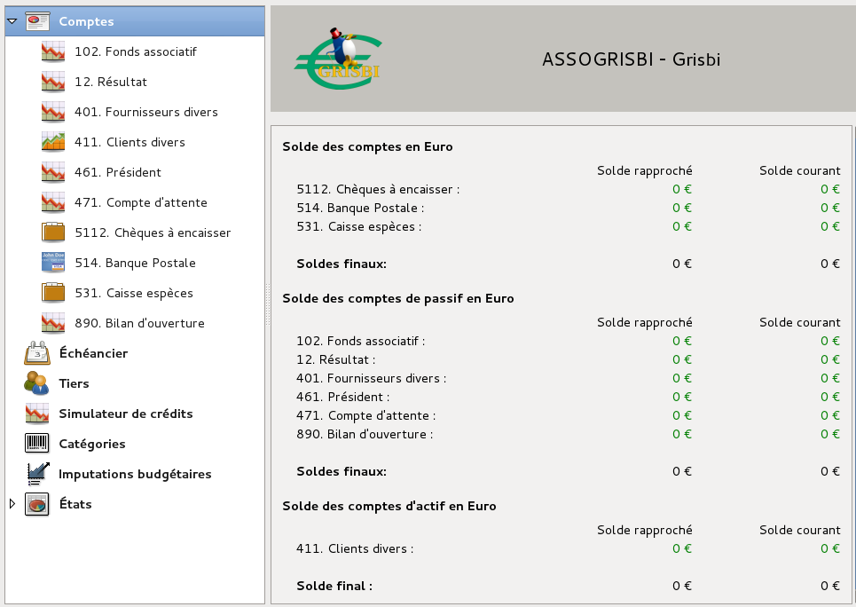
Figure 19.1: Page d’accueil après création de tous les comptes
Pour reprendre la comptabilité déjà existante de votre association dans Grisbi, procédez comme suit :
À titre d’exemple, saisissez les soldes des comptes de bilan à la date du jour de la saisie (théoriquement le 1er jour de l’exercice) :
Note : aucun résultat n’est destiné à rester durablement au compte 12. Résultat, qui devra alors être apuré selon les décisions de l’assemblée générale. En attendant, il peut être facultativement viré au compte 88. Résultat en instance d’affectation.
Une fois ces opérations saisies, le compte 890. Bilan d’ouverture et la page d’accueil devraient se présenter ainsi :
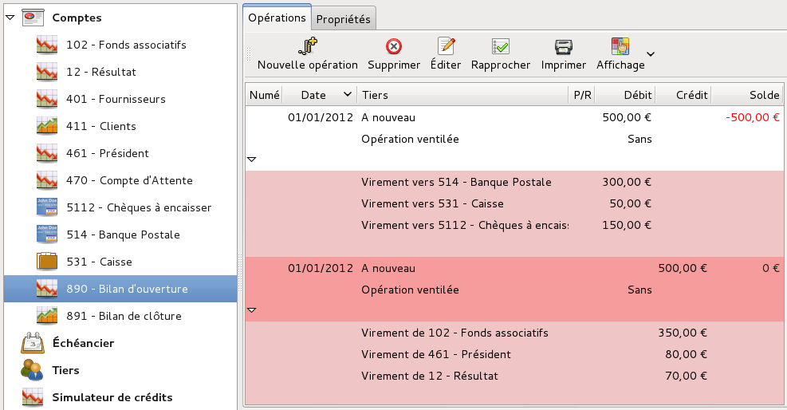
Figure 19.2: Bilan d’ouverture : reprise des «À nouveaux »
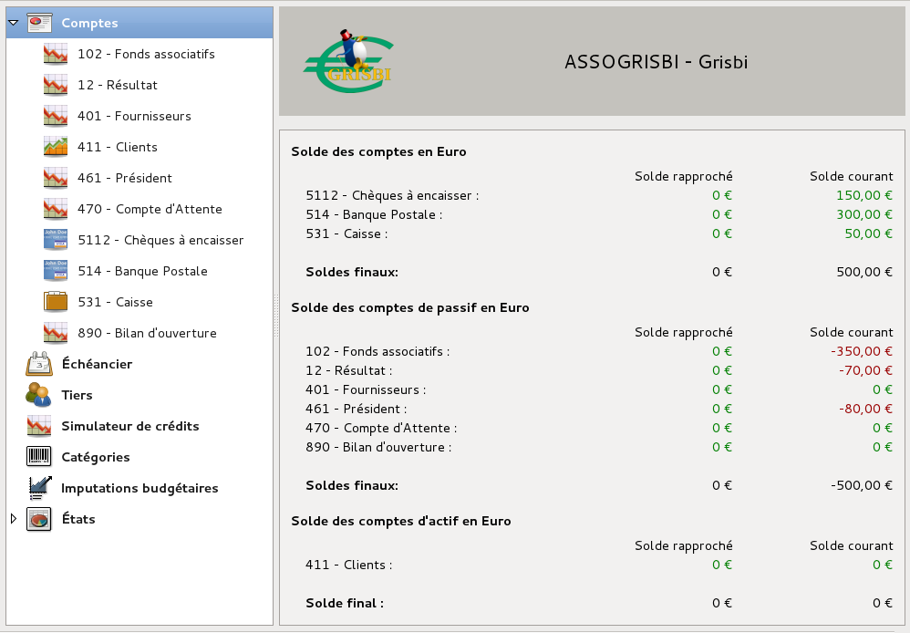
Figure 19.3: Page d’accueil après bilan d’ouverture
Les mouvements entre comptes se font comme pour une comptabilité personnelle. Voici quelques exemples d’écritures courantes dans la comptabilité d’une association ou d’une petite entreprise (sans TVA) :
Maintenant, un autre petit exercice : comment comptabiliser une vente à crédit (3 écritures) ? Vous trouverez la réponse en fin de chapitre (voir le paragraphe 19.4, Exercice 2).
La comptabilité générale classe les charges et les produits par nature. Pour une association, il peut être nécessaire de tenir une comptabilité analytique qui classe recettes et dépenses (charges et produits) par destination ou par fonction. Il y a deux grandes classes :
Dans Grisbi, cette double imputation peut être traitée en utilisant les Imputations budgétaires. Vous numéroterez ces imputations budgétaires en utilisant la classe 9 qui est disponible, et en créant deux blocs de sous-classes :
Voici deux exemples de tels mouvements :
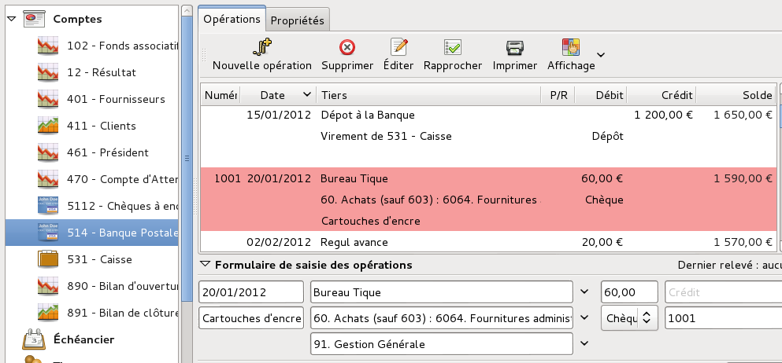
Figure 19.4: Saisie d’une opération d’achat de cartouches d’encre
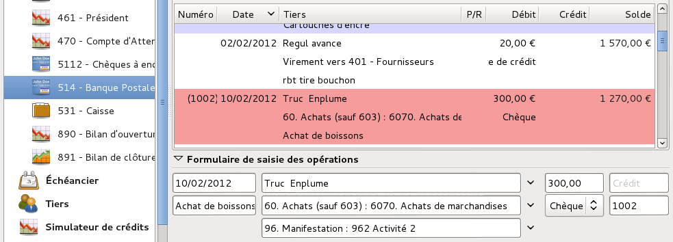
Figure 19.5: Saisie d’une opération d’achat de boissons pour la manifestation Activité 2
Vous pourrez en tirer des états plus ou moins détaillés, à vous de les créer suivant vos besoins, par exemple :
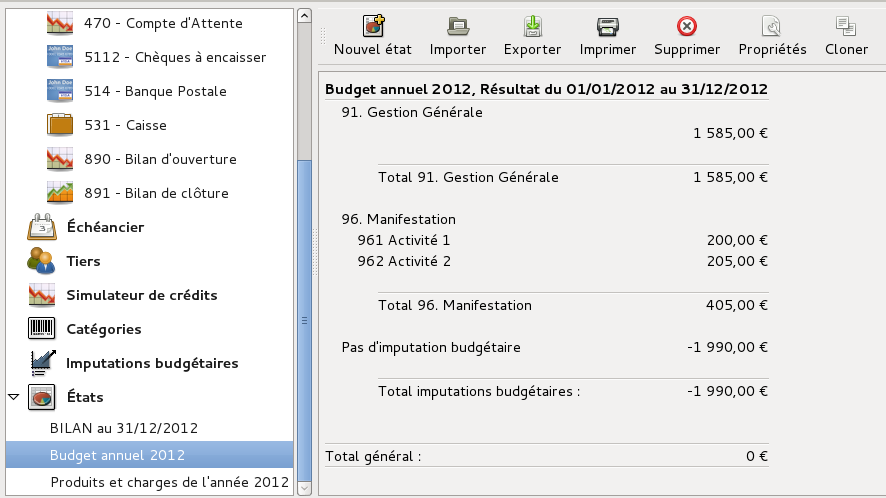
Figure 19.6: État détaillé des dépenses analytiques de Gestion générale et Activités
En fin d’exercice, un certain nombre d’opérations doivent être comptabilisées ; voici quelques exemples :
Constatez la dépréciation des biens immobilisés dont l’association ou la petite entreprise est propriétaire ; par exemple pour l’amortissement d’un ordinateur de bureau acheté 500 euros sur 5 ans :
Vous devrez comptabiliser cette opération chaque année pendant 5 ans. Si vous avez acheté le bien en cours d’année, vous devrez faire un calcul au prorata temporis pour la 1ère année.
Note : pour tout ce qui concerne les écritures de régularisation de fin d’exercice (charges à payer, charges constatées d’avance, etc.), qui assurent le respect de l’indépendance des exercices, consultez la documentation comptable mentionnée dans la section 19.1, Introduction à la comptabilité d’association.
Lors de la clôture d’un exercice, vous devez créer un certain nombre d’états. En particulier, trois états doivent être obligatoirement présentés lors de l’assemblée générale de l’association, qui est en charge d’approuver les comptes de l’exercice ; ce sont :
Note : pour «Produits et Charges », on parle très fréquemment dans les associations de «Dépenses et Recettes » ; comme vous ne pouvez savoir si les documents comptables devront un jour être approuvés par un Commissaire aux comptes ou être présentés à une administration, il est conseillé d’anticiper cela, donc d’utiliser tout de suite le terme Produits et Charges, et ceci dès la création d’une comptabilité d’association.
Par ailleurs, Grisbi permet de créer des états préparatoires synthétiques de toutes sortes ; pour cela, consultez les chapitres :
Pour configurer chacun des trois états, suivez la procédure de création à partir de la section 21.1, Choix du modèle de l’état de départ. Ajustez, dans la fenêtre de création/modification des états, les paramètres communs et les paramètres spécifiques à cet état, comme indiqué ci-dessous ; une fois chaque configuration terminée et validée, l’état concerné apparaîtra sous l’onglet États du panneau de navigation de Grisbi.
Note : pour pouvoir utiliser des exercices, il faut que ceux-ci soient configurés dans le menu Édition - Préférences (voir la section 15.2, Mise en place des exercices).
Grisbi ne dispose pas de la fonction de clôture automatique en fin d’exercice comptable. Cela ne doit pas empêcher le respect des règles du PCG (Plan Comptable Général) Art. 441/12, ce qui peut sembler un peu fastidieux, mais cela ne se produit qu’une fois par an… Les sections suivantes indiquent comment procéder :
Pour solder les comptes de produits et charges, il faut les virer au compte 12. Résultat ; procédez comme suit :
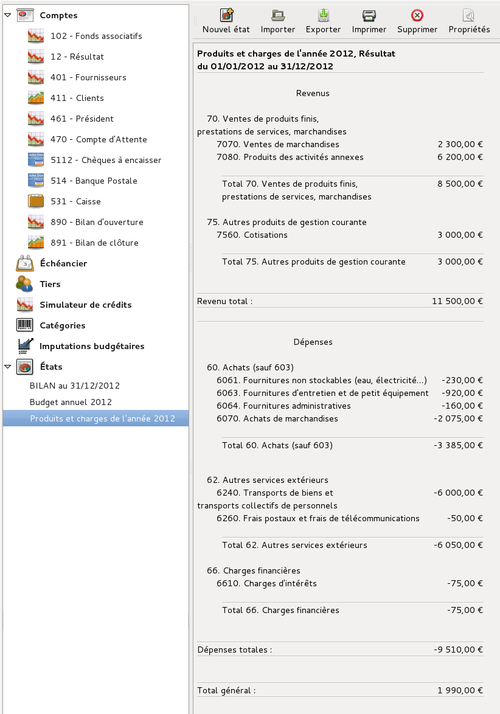
Figure 19.7: État Produits et Charges de l’exercice (Résultat)
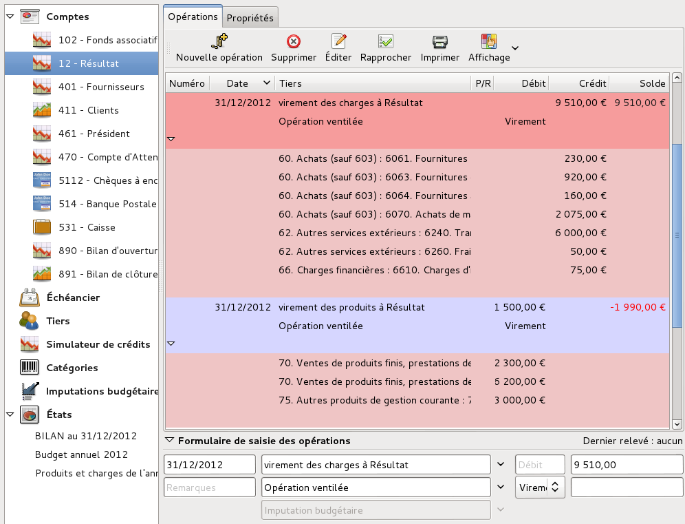
Figure 19.8: Clôture des comptes de produits et charges et détermination du résultat de l’exercice
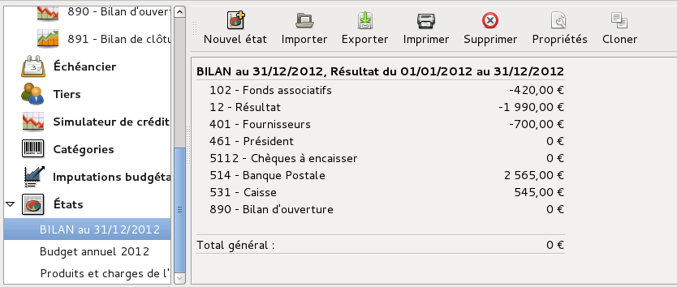
Figure 19.9: État Situation patrimoniale (Bilan)
Ces écritures permettent le report des soldes des comptes de bilan sur l’exercice suivant (À nouveau).
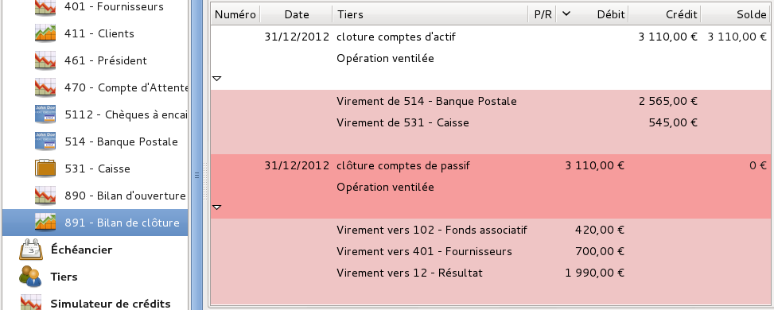
Figure 19.10: Clôture des comptes d’actif et de passif
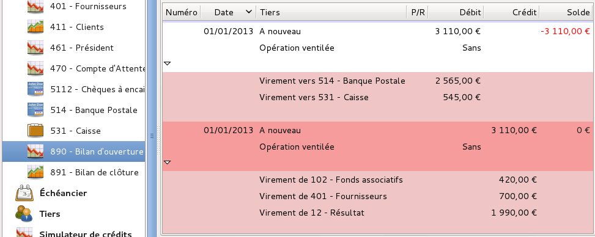
Figure 19.11: Réouverture des comptes d’actif et de passif
Attention : Grisbi ne dispose pas de la fonction de clôture automatique en fin d’exercice comptable ; la conservation intégrale de vos données après la clôture d’un exercice n’est donc pas totalement assurée, car vous pourriez encore les modifier par inadvertance; il vous appartient de veiller à la pérennité de vos données, par exemple en faisant une copie de sauvegarde de votre fichier de comptes à la date de la fin de cet exercice.
Hector Boyau avait acheté 60 bouteilles et 10 cubis pour 280 euros, l’opération d’achat avait été passée en opération ventilée (voir la section 19.2.2, Deuxième cas de figure) :